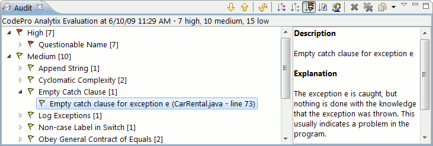

This links below contain descriptions of the audit rules provided with CodePro. Each audit rule has a description plus a picture and list of any of its unique parameters (if it has any).
Audit rule categories available include: